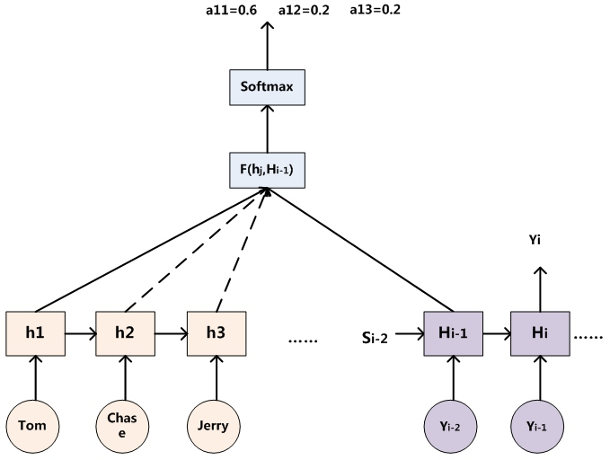

1. 介绍
最近两年，Attention Model在深度学习上得到了广泛应用，在诸如NLP，图像识别，语音识别等很多领域都得到了很大的发展。
本文简要总结一下自己学习过程中对注意力机制的理解，再顺便介绍一下最近比较热门的self-attention自注意力模型，文中很多图片来自张俊林博士的博客《深度学习中的注意力机制》。
2. 视觉注意力
在2014年当时还在巴黎六大做实习的时候，我第一次了解到视觉注意力这个东西。相关研究表明，人类在看到一张图片的时候，为了获取其中的信息，比如说判断图片的分类，我们是不会像计算机一样扫描每一个像素点提取特征。大脑会控制眼睛去扫描图片中的几个“重要区域”，比如下图：
但是如何知道大脑对于“重要区域”的划分，这就是一个很困难的问题了。当时研究的就是怎么用计算机算法，针对一张图片生成它对应的视觉热力图。由于在CNN大热之前，当时做图像分类不像现在都是end-to-end的，还是先人为构造各种图像特征，常用的有SIFT，HOG等，然后根据这些特征在图中出现的位置，找出它在热力图上的值，进行加权求和，然后通过一些分类算法，SVM，LR等等。
当时除了用一些常用的亮度，色度，颜色梯度等信息外，还用了眼动仪用来采集人类在看图片时的关注点，事实证明如果算法模拟的热力图能很好的代表图中重要区域，对特征进行合理加权的话，就可以很好的提升分类的准确性。
不过这种非端到端的方式有的时候很难去评价好坏，因为涉及的流程太多了，很可能你的热力图生成的不错，但是由于后面机器学习算法的问题却导致结果下降或者提升不突出。
3. 深度学习中的Attention模型
上面介绍的视觉注意力本质上是深度学习中注意力模型的雏形，不过在深度学习中，并不用特意的单独去生成热力图，而是在端到端的训练中就能直接获取到这些特征，不得不感叹现在的计算能力真是牛逼，各种复杂模型都往上堆，居然也能训练收敛，放在以前简直不敢想。
在介绍深度学习的attention模型之前，先讲一下encoder-decoder框架。我自己平时主要也是做NLP任务的，在后面attention介绍时，基本都是以这套编码-解码框架为应用场景的，当然attention的思想是独立于框架的，在其它模型上一样可以使用。
3.1 encoder-decoder框架
编码解码模型在NLP领域上应用非常广泛，在机器翻译，文本生成，问答系统等任务上都取得了突破性的成果。
直观上可以这样理解，比如在机器翻译时，我们有待翻译文本source和翻译后文本target：
由于source和target长度在机器翻译时基本不一样\(n \neq m\)，在序列标注时经常使用的对齐的模型肯定是不适用的。这里采用的方法是先用一个编码器对总的输入source进行编码，生成一个语义编码C，或者也可以称为输入的上下文信息context:
可以将其看作，人在看完这句话后，在大脑中的一个“理解”。然后根据这个“理解”去进行翻译，就对应着解码的部分了：
解码就是根据编码获得的C和已经生成的target序列去预测下一个生成的单词\(y_i\)。
类似的，对于文本生成任务，encoder表示一个对文章的阅读和理解，decoder就是生成文本摘要的过程；对于问答系统，encoder就是一个问句，decoder就对应一个回答过程。总之，这套框架在NLP中应用非常广泛。
3.2 Attention模型
在上面框架介绍中，我们可以发现，对于每个输出\(y_i\)的预测，它们使用的是同一个语义编码C，这其实是很反直觉的。因为在人进行翻译的时候，比如说在翻译Tom chases Jerry这句话时，我们在翻译“汤姆”中文时肯定更关注“Tom”的英文，而不是一整句话的英文。
换句话说，就是人在翻译每个词的时候，注意力在原句子中是有所侧重的，而不是漫无目的的随机搜索，处理长的句子时，这种聚焦特定词的行为更加明显。
于是很自然的想到引入一个attention模型，来表示这种注意力对不同词的侧重。比如说，在翻译“杰瑞”的时候，对source中不同词有这样的分布：(Tom, 0.3), (Chases, 0.2), (Jerry, 0.5)，通过这种概率分布分配attention的方式称为soft attention。与之对应的是hard attention，Hard Attention是一个随机的过程。Hard Attention不会选择整个encoder的输出做为其输入，Hard Attention会依概率Si来采样输入端的隐状态一部分来进行计算，而不是整个encoder的隐状态。为了实现梯度的反向传播，需要采用蒙特卡洛采样的方法来估计模块的梯度。两种Attention架构都有各自的优势，但目前更多的研究和应用还是更倾向于使用Soft Attention，因为其可以直接求导，进行梯度反向传播。
3.2.1 Attention概率分布的计算
借用之前的encoder-decoder框架，如下图：

针对当前所需预测\(y_i\)，利用前一个时间的隐藏层输出\(H_{i-1}\)和encoder过程中的每个时间的隐藏层输出\(h_j\)进行一个计算\(F(h_j, H_{i-1})\)，然后再经过一个softmax就得到了对应source每个位置的attention概率。不过在F的选择上，有很多不同的方法下文再讲。
上图是一个英法翻译时的attention计算的示意图，可以发现亮的地方所对应的英语和法语是相当关联的。
3.2.2 Attention概率分布的使用
得到了每个\(y_i\)的attention概率分布后，通过下图加权求和的方式可以得到预测\(y_i\)时的语义编码C:
其中\(a_{11}, a_{12}, a_{13}\)分别表示预测第一个词时使用的attention概率分布，然后利用这个分布，对source中每个时间的隐藏层状态\(h_1, h_2, h_3\)进行加权求和，就得到了预测第一个词时应该使用的语义编码\(C_1\)，即：
其中L表示source长度，\(h_j\)表示source每个时刻的隐藏层输出。类似的可以求出预测“追逐”和“杰瑞”时的语义编码\(C_2\)和\(C_3\)：
于是可以得到：
对比之前的\(y_i = g(C, y_1, y_2, ..., y_{i-1})\)使用的都是同一个语义编码C，这里每一次预测都会先计算一个与之匹配的语义编码\(C_i\)。
3.2.3 理解Attention模型的含义
通常在NLP领域里，Attention经常被看作是一种将target的某个词与source中所有词的对齐的过程，生成的概率分布，可以理解为对齐每个词的概率。这在机器翻译过程中显得尤为直观：传统的统计机器翻译需要专门进行短语对齐，而attention机制起的就是这样的作用。
Google16年的机器翻译系统使用的也是类似的结构：
它使用了8层的LSTM进行编码和解码，并且使用了attention机制。
3.2.4 Attention机制的本质
接下来抛开encoder-decoder框架，讲解一下attention思想的本质。如下图：
首先可以将source看作是一系列的
其中L表示Source的长度，这个和之前机器翻译时的公式是一样的，只是在机器翻译时，Key和Value是一样的，都是Source中每个时刻隐藏层状态。
和之前的Attention概念类似，这里的attention仍然是学习如何从大量信息中筛选出和当前query最相关的信息，权重越大的value说明越重要。然后attention机制的具体计算过程如下图：
第一个阶段，将Query和每一个key进行计算\(F(Query, Key_i)\)，得到该query和每个value的相关性\(s_i\)。这个相关性有很多种求法，下面列举一些：
-
dot
\(f(Q, K_i) = Q^TK_i\)，这种方法是直接将Query和每个\(K_i\)做向量点乘，注意到，这样就必须要求两者的向量维度是一致的。
-
general
\(f(Q, K_i) = Q^T W_a K_i\)，因为引入了一个中间矩阵\(W_a\)，就不再强制要求\(Q\)和\(K_i\)的向量维度一致，这也是被称为general的原因。 - concat
\(f(Q, K_i) = W_a[Q;K_i]\),先将两者进行拼接，再和\(W_a\)求积。 - perceptron
\(f(Q, K_i) =v^T_a tanh(W_a Q + U_aK_i)\)，这里用了三个矩阵和tanh函数。
第二个阶段就是将第一个阶段得到的相关性，进行softmax归一化，使其符合概率分布的形式\(a_i\)。
第三个阶段就是根据第二个阶段的权重系数\(a_i\)，对所有\(value_i\)进行加权求和：
目前绝大多数的使用attention的方法都可以抽象为这三个过程。
3.3 Global Attention和Local Attention
Global Attention就是上面介绍的普通的attention，这个Global体现在它在计算Attention的时候需要考虑所有的source进行计算。在source非常长的时候，这种方法肯定会带来一定的效率问题。
因此，为了提高效率，Local Attention就应运而生了。
从上图看到，在计算attention的时候会先根据target中当前预测词的隐状态\(h_t\)去计算一个source中对齐的位置\(p_t\)：
S表示source的长度，sigmoid函数的值域是[0, 1]，这样\(p_t\)就可以对应source上任意的位置。其中\(v_p\)和\(W_p\)都是模型的参数。在确定里位置后，就可以只针对\(p_t\)左右的一个窗口，考虑它们的attention效果了：
上面s是表示位置，然后后面用了一个类似高斯分布形式对偏离中心点\(p_t\)的attention进行降权。
Global attention和local attention各有优劣，不过实际使用时还是global attention更加普遍。因为local attention存在两个主要问题：1. 当source句子长度不长时，local attention并没有带来计算上的优势。2. \(p_t\)位置预测的准确率无法保证，导致计算local attention的准确率下降。
3.4 Self-Attention模型
在了解了attention模型的基本概念后，再简单讲一下最近非常热门的self attention模型。self attention模型也被称为intra attention模型，在最近一年得到了很多应用，尤其是在google机器翻译团队在2017年6月发表的Attention is All You Need上得到了大量使用，并取得了非常好的成绩。
在前面讲普通attention的时候，source和target是不同的，而在self attention上，自注意力说明的就是两个是一样的，即target = source情况下的attention机制。也可以被看作是在source自身内部或者target自身内部发生的attention机制。
常规的attention，其机制很容易理解，比如在机器翻译上就是进行对齐，判断当前要预测的词和source中哪些词关系更大。但是在self attention中，该怎么理解呢？换句话说，self attention学到了哪些特征呢？
上图是google论文中的一张图，表示了self attention中的学到的特征。可以看出，self attention一定程度上可以捕获一个句子中单词之间的一些句法特征或者语义特征。也就是说，类似于LSTM等RNN捕获长期依赖的作用，self attention也可以用来捕获句子中长距离的依赖特征。
但是LSTM需要经过若干时间将信息进行积累，距离越远，这种捕获的可能性就越小。而self attention简单粗暴，直接就可以在计算过程中把需要的词联系起来，无论它们之间隔的有多远，更有利于利用这些特征。
除此之外，如果不使用RNN的隐藏层进行编码，直接使用self-attention的话，对于增加计算的并行性也有很大的帮助，毕竟RNN必须要延时间进行计算，天生就不适合GPU的并行化计算。这也是self attention最近越来越受欢迎的原因。
4. Attention机制的应用
上面主要是讲了attention机制在nlp模型中的应用。除此之外，attention在图像任务，语音任务上都有很多的应用。
上图中表明生成图片描述是，对于不同词，它侧重的图片中的区域是不同的。比如在输出单词girl的时候，attention机制将更多的注意力放在了图片中女孩的区域。
上图是在进行语音识别的时候，不同的输出字符和音频信息对应的attention，该场景符合典型的encoder-decoder框架，而且使用attention的方法也和机器翻译中使用方法非常相似。不过相对来说，语音识别的attention不会选择比较远的信息，毕竟音频和它的文字是顺序对应的。
5.总结
基础的attention机制理解起来是不难的，而且它的本意非常符合直觉。选择对当前预测最关联的信息来进行预测明显要比随机选择或者选择所有冗长的信息来预测更容易得到好的结果。
近年来Attention机制的使用越来越频繁，很多都取得了不错的效果。在读论文的过程中，发现越来越多的任务都喜欢加入attention，而且很多时候都会进行各种各样的变形或者tricks，如果不是很了解的话，对于论文的阅读会造成一定的障碍。因此专门学习一下attention的基础知识就显得很有必要了。
本文主要是自己学习attention机制的一个笔记，最后提了一点关于self attention机制的内容，但是这并不代表self attention不重要，相反这一块的应用越来越主流。不过这一块以后会专门抽出来在讲google那篇论文的时候讲一下。
参考资料
[1] Attention Is All You Need - Ashish Vaswani, et al
[2] 深度学习中的注意力机制 - 张俊林
[3] 深度学习中Attention Mechanism详细介绍：原理、分类及应用 - lqfarmer